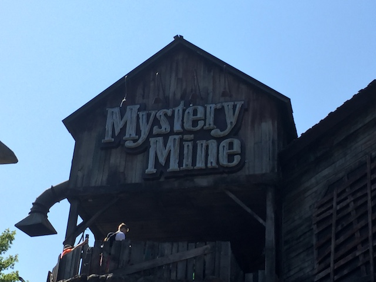

| |
Mystery Mine Review
For today's review, we are heading to Dollywood to review the parks Euro Fighter, Mystery Mine. This is one of the more well known Euro Fighters as well as one of the more popular Euro Fighters. Well, sort of. Mystery Mine has a sort of...mixed reputation. Some enthusiasts really like it, call it one of the best Euro Fighters, saying that it has a great layout and does all sorts of cool stuff. Others say that it's really rough, clunky, and has an awkward meandering layout. And...yeah. I see both sides. OK. I'm firmly in the first camp of Mystery Mine is awesome. But I can totally see why people don't like the ride. So yeah. Mystery Mine is really interesting in that way. Let's not waste any more time. Hop in the cars, pull down the OTSRs, and we're off! We immedietly head down a small drop and up a small little hill. Hey. This is pretty good so far. We stop, go around some curves, looking all around at the theming. So yeah. This is practically a dark ride at this point. Only there's a point in the dark ride where there's a heavily banked turn that sort of gives you some good hangtime. That's really cool. Head down a small little drop, see a cool green light, head around a turn, and there we go. There's that lifthill. It's a small little vertical lifthill, and it serves us well. Plus, we get a good view of the shaft. We then coast and go through a couple dips, getting a good view of Dollywood. What kind of a Euro Fighter is this!? Well, just as you say that. We go through some straight track and come to a stop. We then go down a vertical drop. OK, it's technically not vertical. It's only 85 degrees. Hey! I thought these Euro Fighters thing was that they went beyond 90 degrees!? Well, it's mainly because this drop is just really small. Cliff jumping small. But it's still a lot of fun. We then head into this...sort of horseshoe element. It honestly reminds me of those elements you see on Maurher Spinners. It's nearly vertical and a turnaround. It's...a little awkward, but still a lot of fun. We then head up a curved hill, only you never leave the ground. So yeah. We're just curving up the hillside. It's...kind of weird that way. I know some people complain about headbanging in these parts. Personally, I've never found that to be an issue. But I can see why. I also see why people see this to be awkward. This definetly is an awkward Euro Fighter (at least it is so far). We go through a midcourse brake, head down a helix also going around the hill, before dipping down. We head up a small hill, right under the first vertical drop. We go through a couple windy turns (No Headbanging), and head right back into the Mystery Mine. Yeah. It's a good idea. You already were inside earlier, and you never solved the mystery! Get your ass back in the Mystery Mine and solve it! We roll right into the brakes, right in the dark. And this might've been a bad idea. We hear thunder and lightning is flashing. And now we're on our backs. Yep. We're going through another vertical lift. We see something fall onto us. It's just a video on a screen. But it might fool some of the morons on the ride. We then reach the top. And stop. OK. What the hell is going on? BOOM!!! BOOM!!! FIRE!!! EXPLOSION!!! BAIL!!! DROP!!!! AHH!!!! Yes, now we get that beyond 90 degree drop. And it's the best part of the ride. Now we got our speed going, and we're really kicking ass! Let's do this thing!! After that, we go right into...a barrel roll. AWESOME!!!! UPSIDEDOWN!!! FLIP UPSIDEDOWN AGAIN!!!! SWEET!!! There's actually a little bit of upsidedown straight track, so you get some hangtime right here, before dropping back down and flipping rightside up. THIS RIDE KICKS ASS!!! And now it's over. Aww. Lame. =( So yeah. Mystery Mine is an intersting ride. On the one hand, the whole first half of the ride is incredibly awkward and kind of slow. And it definetly could use lap bars. And yet, despite all that, it's my 3rd favorite Eurofighter, only behind Fluch von Novgorod (#1) and Takabisha (#2). And both of those have freaking launches! So why do I like Mystery Mine despite its flaws? #1. It has really good theming. It tells a fun little story, and it has atmosphere and charm to it. And I really like that. #2. The very end. That beyond 90 degree drop and two inversions. HOLY CRAP!!! I LOVE that part of the ride! So yeah. I really like Mystery Mine. Though I can totally understand why another person may not like it so much. Though yeah. Give it a ride when at Dollywood.
8/10
Location: Dollywood
Opened: 2007
Built by: Gerstlauer
Last Ridden: June 25, 2016
Mystery Mine Photos



Home
|